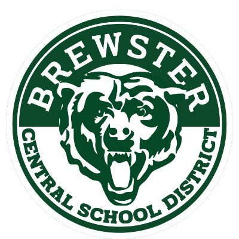

Welcome!
I am an experimental AMO physicist interested primarily in optical atomic clocks. This is my personal homepage. If you have somehow found yourself here but do not know me personally: note that this website is currently under very early stages of construction, and content may be from the template I used to create the page.
About me
I am currently a postdoctoral researcher in Nils Huntemann's working group, optical clocks with trapped ions, at the PTB. My project focuses on developing a dual-species 171Yb+/88Sr+ trapped ion optical clock. I completed my PhD under the supervision of Adam Kaufman at JILA, University of Colorado Boulder and NIST, where we demonstrated the first optical-frequency comparison between ensembles of entangled neutral atoms to reach a measurement precision below the so-called standard quantum limit.
Academic Employment
Physikalisch-Technische Bundesanstalt (PTB)
Postdoctoral researcher • 2025–Current
Education
University of Colorado Boulder, Boulder, CO
PhD in Physics • 2018–2025
Yale College, New Haven, CT
Bachelor of Science in Physics • 2014–2018

Brewster High School, Brewster, NY
High School Diploma • 2010–2014
Awards and fellowships
- Humboldt Research Fellowship, Alexander von Humboldt Foundation (2026)
- NDSEG Fellow, Army Research Office (ARO) (2020)
- Howard L. Schultz Prize, Yale University (2018)
Contact
Email: william.eckner@ptb.de